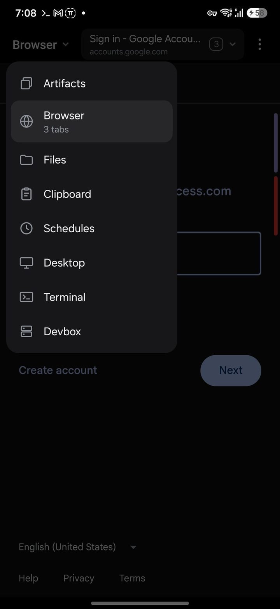
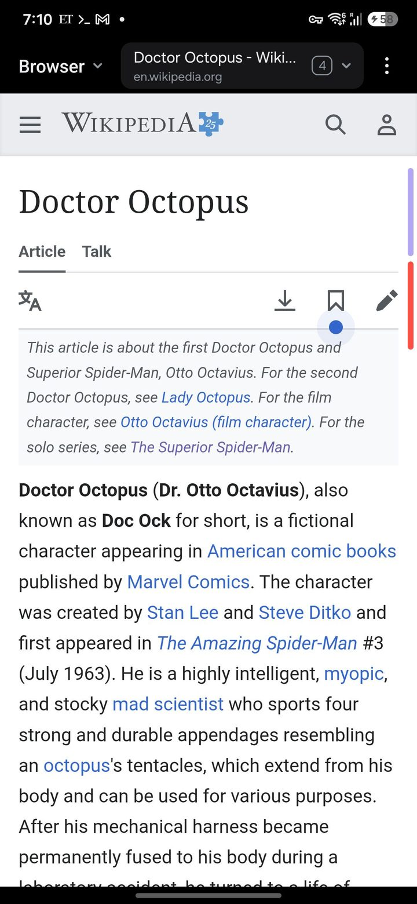
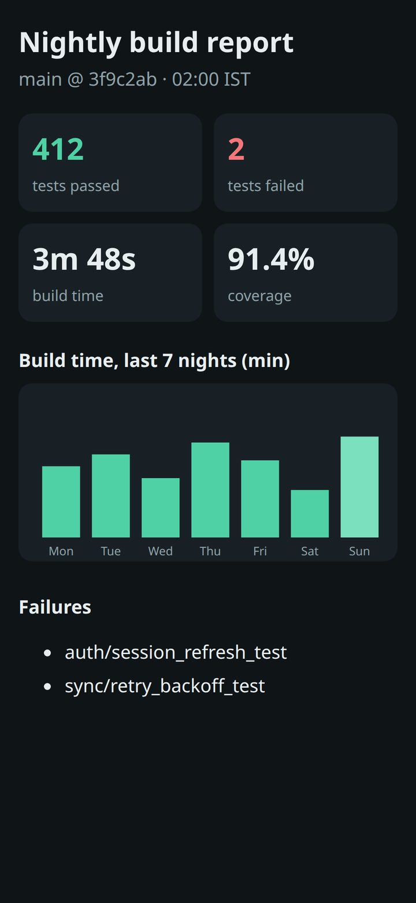
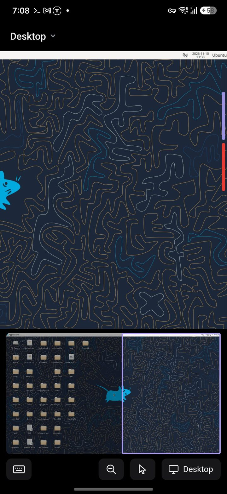

A second screen
An overlay on your phone, one tap on an edge handle away, over whatever chat you're in. The box's files, terminal and desktop, and everything the agent made.
Open source · early
Otto wires your phone and a Linux box together for any coding agent. The agent keeps its real shell and files on the box, and gets what a phone otherwise lacks: a second screen, a browser it drives, control of the phone, and a place for what it makes.
Doc Ock had four arms. Your agent gets a phone, a browser and a desktop.


An overlay on your phone, one tap on an edge handle away, over whatever chat you're in. The box's files, terminal and desktop, and everything the agent made.
A real browser on your phone, signed in to your accounts. The agent reads pages, clicks and types; you watch, and take over for a login or a captcha.

Reports, decks and pages the agent publishes open over your chat in one tap, with previews and real downloads. The hub stays up while the box sleeps.

Screenshots, the UI tree, taps and typing, installing the app it just built and reading its logs. And the box's own desktop when it needs one.
You talk to the agent through its own frontend: Claude's remote sessions, the ChatGPT app for Codex, Happy, a terminal. Otto never sits between you and the agent, and never holds your provider's credentials. Links the agent writes are plain https on your tailnet: they open in any browser, and the Otto app only opens them more nicely.
Agents, people and scripts use the same otto CLI, plus a small MCP server that returns screenshots inline.
# the phone's browser
otto browser open https://example.com
otto browser snapshot
otto browser click e12
# the phone
otto phone screenshot
otto phone install app-debug.apk
# show you something
otto artifact publish report.html
otto show https://…Everything stays on your Tailscale network. The phone dials out to the box, and the box serves the phone's tools on localhost.
Early. The pieces run every day on the author's own phone and box, and are moving into the repo one at a time. Setup is by hand for now; a one-command otto setup comes later. Follow along on GitHub.